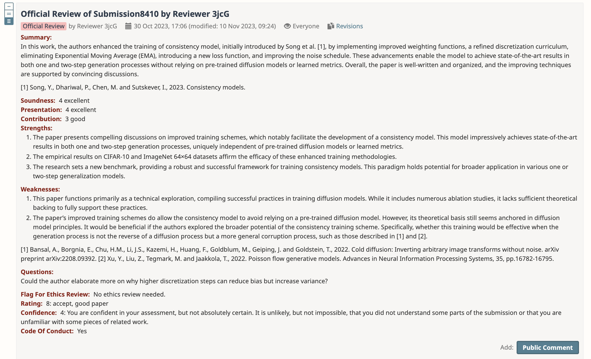

Peer review is the cornerstone of scientific publishing, yet its effectiveness remains a subject of ongoing debate,
particularly as conference submission numbers continue to grow.
This blog post introduces the Structured, Normalized OpenReview dataset (SNOR v1), a dataset derrived from OpenReview,
a platform that provides unprecedented transparency into the peer review process for two of the largest Machine
Learning conferences. By examining rejected papers from top machine learning conferences but went on to achieve high
citation counts, we can gain insights into the challenges and limitations of academic peer review.
The dataset is available under the CC-BY 4.0 license
and is available on Zenodo.
What is OpenReview?
OpenReview is a platform designed to
encourage openness and public access in scientific communication, with a particular emphasis
on the peer review process.
It provides an open source platform
for conferences to manage their review process. OpenReview has been used by many large Machine Learning conferences
to manage workshops, full conference submissions and even longer running editorial review processes.
OpenReview.net was created by Andrew McCallum's Information
Extraction and Synthesis Laboratory at UMass Amherst.
One particularly interesting feature of conference submissions using OpenReview is the
publication of paper acceptance decisions, official reviews and fully anonymized
discussions surrounding paper submissions.
As these acceptance decisions are public, we can look at the quality of peer review over time (and other interesting patterns)
by linking OpenReview submissions to external academic graphs (in this case, Semantic Scholar).
The Data
Many conferences use OpenReview to manage parts of their conference process (in particular, for workshop reviewing).
Two conferences have used OpenReview consistently to manage their main conference tracks -
The International Conference on Learning Representations (ICLR) and
Neural Information Processing Systems (NeurIPS).
In particular, we will focus on the following conference years:
- ICLR: 2017, 2019-2025
- Neurips: 2021-2025
Neurips only transitioned to OpenReview in 2021, and for 2018, OpenReview was used for ICLR reviewing but the decisions and reviews were not published.
There is also one important difference between the two conferences - all papers submitted to ICLR are public by default, but papers rejected from Neurips are
only made public with the author's permission. This introduces a clear bias in the data (which can be seen in the number of rejected papers below).
When papers are submitted to a conference on OpenReview, they are anonymized for the duration of the review process.
Multiple reviews from official reviewers, Area Chairs and interested
members of the public are published alongside the paper. These reviews are also anonymized, and paper authors are not able to see reviewer identities. Official reviews
include structured metadata about the review (in particlar, a numeric score and confidence rating).

An example review from ICLR 2025. Papers are reviewed by multiple reviewers, and the review scores and confidence ratings are published alongside the paper.
All of this data is super interesting, but it is not in a very usable format - ideally we need to link paper submissions to papers which have made it out into the real world,
so we can see how reviews, scores and acceptance decisions correlate with citations.
Paper Matching Success Rate
OpenReview papers are linked to their Semantic Scholar papers using the Semantic Scholar Graph API.
As a first step, papers are linked using exact title matching, which is reasonably effective - covering about 80% of papers.
The largest source of errors when using this approach came from papers with LaTeX in the title,
as well as as papers which changed their title from a pre-print version which was already publicly available.
The following chart shows the success rate of this approach per conference.
To catch some of these errors, I then used a second pass to approximately link papers. This used Semantic Scholar's Paper Search API to retrieve
the top 10 search results for a given paper title. I then checked for the highest scoring result based on the following criteria:
-
Levenshtein distance between titles
-
Average Levenshtein distance between authors, ordered paper author order
-
Discarding results where the highest ranking result based on the above criteria had a title similarity of less than 0.7
This catches quite a few of the errors (particularly related to syntactic differences in the title). For some papers submitted
to OpenReview, there actually is no publicly available paper, typically because these papers are either improved for another subsequent
conference, or are not high enough quality to be published.
To check this, we can look at the acceptance rate of papers which were not matched to a publicly available paper. As the graph below shows,
most papers across all conferences which were not linkable were either rejected or withdrawn.
The reward for doing this work is SNOR v1, a dataset of 38,262 linked records between OpenReview submissions and a dynamic academic graph, as well as 462,995 structured comments from reviewers.
Semantic Scholar's paper information
is quite rich, and includes information about authors, citations, and a variety of other metadata. By default, I added
citation counts, venue information, Specter embeddings and author ids to the dataset - but other information is easily retrievable using the semantic_scholar_id.
This gives us the ability to look at the quality of peer review over time (and also means this dataset can be updated in the future, as papers
gather more citations).
id BkbY4psgg
semantic_scholar_id 6b024162f81e8ff7aa34c3a43d601a912d012c78
raw_decision ICLR 2017 Oral
normalized_decision Oral
title Making Neural Programming Architectures Genera...
abstract Empirically, neural networks that attempt to l...
keywords [Deep learning]
accepted True
publication_venue International Conference on Learning Represent...
publication_venue_id 939c6e1d-0d17-4d6e-8a82-66d960df0e40
url https://www.semanticscholar.org/paper/6b024162...
citation_count 146
embedding [-0.0735881552, 0.3261716962, -0.3699628115, -...
authors [Jonathon Cai, Richard Shin, D. Song]
authorIds [2350111, 39428234, 143711382]
conference_year 2017
conference_name iclr
conf_id iclr2017
review_scores [8.0, 9.0, 8.0]
review_score_avg 8.333333
review_confidences [8.0, 9.0, 8.0]
review_confidence_avg 4.0
An example record from the dataset.
In addition to the paper information, we also have a set of 462,995 structured comments from reviewers. these
comments include references to papers, anonymous author signatures, and arbitrary content (typically in the
form of title:content blocks which render in OpenReview). Reviews are distingushed from other comments by the
'is_review' field, which is set to True for reviews. These comments will also have a numeric rating and confidence score.
Finally, all comments have a reply_to_id field, which links to the id of the paper that the comment is replying to. Review comments
will have a reply_to_id that links to the id of the paper they are reviewing. There are a small number of orphaned comments which do not have a reply_to_id. From inspection, these tend to be special cases where an AC has manually commented on a paper conversation.
{'conference_id': 'iclr2017',
'paper_id': 'B1jnyXXJx',
'comment_id': 'BJPZL-vmx',
'signature': 'ICLR.cc/2017/conference/paper4/AnonReviewer1',
'content': {
'title': 'hyperparameter optimization and momentum vs CPN',
'question': "
The hyperparameters of gradient descent seem to be chosen once and fixed.
Would optimizing the gradient descent hyperparameters lead to equivalent
performance as the CPN method?\n\nFollowing up on another reviewer's
question: CPN seems closely related to momentum. Can you provide a clear
example to show how CPN is qualitatively distinct from momentum? (I believe
it is, but this could be clarified further in the paper)"
},
'reply_to_id': 'B1jnyXXJx',
'is_review': False,
'rating': None,
'numeric_rating': None,
'confidence': None,
'numeric_confidence': None}
An example comment from the dataset.
So - are we any good at reviewing?
Now we have OpenReview submissions to these conferences aligned with a academic graph, we can compare
citation counts to review scores - do accepted papers correlate with more citations? Overall, yes! In general
across conferences, accepted papers have a higher citation count than rejected papers. However, this bad news is that
it does look like we are getting worse at reviewing over time - ICLR 2024/5 have a larger number of rejected papers with
a substantial number of citations. Of course, papers can be influential for many reasons, and some of these
reasons are not related to scientific novelty. So this correlation is not a perfect proxy for review quality.
🏆 Best Rejected Papers 🏆
One of the most interesting things about this dataset is the ability to look at the most highly cited papers that were initially rejected from these conferences.
Some extremely influential papers were initially rejected from these conferences - for example, ROBERTA was rejected from ICLR 2020, and has subsequently been cited over 20,000 times.
High Impact, "Unlucky" First Authors
By linking papers to an academic graph, we can also link paper authors to their academic graph profiles. This allows
us to look at interesting patterns, like the most "unlucky" first authors.
The following interactive visualization shows the most productive first authors whose papers were rejected from these conferences, but were highly cited on average.
Each author is ranked by their average citations per year, with expandable details showing their rejected papers and citation counts.
Conclusion & Future Work
SNOR v1 is not the first attempt to use peer review data to better understand the scientific publishing process. The AMPERE dataset
approaches peer reviews through the lens of argument mining, focusing on the identification and classification of argumentative propositions.
Their annotated dataset of 400 reviews reveals patterns in how reviewers structure their feedback, offering insights into proposition types such as evaluation, requests, and factual statements.
Similarly, COMPARE designed a taxonomy and dataset of comparison discussions in peer reviews.
PeerRead was one of the first larger-scale public datasets of peer reviews, comprising 14.7K paper drafts and 10.7K reviews paired with paper drafts and acceptance decisions.
CiteTracked adds a longitudinal dimension by linking peer reviews to citation statistics across six years of machine learning publications.
SNOR v1 differs from these resources in a several ways. Firstly, it is substantially larger, comprising 462,995 comments on 38,262 papers.
Secondly, SNOR v1 provides structured comment metadata including replies, allowing for more complex analyses involving review discussions, rebuttals and other interactions.
Finally, SNOR v1 normalizes review metadata to provide consistent numeric scores and confidence ratings, allowing for more accurate comparisons between reviews. Links to
an academic graph which not only include paper identifiers but also normalized author and venue identifiers allow a wider range of analyses than previous datasets.
This dataset is a first step towards a more comprehensive understanding of the peer review process.
I hope it will be useful to others, and I welcome any feedback or suggestions for how to improve it. There are several flaws currently - in particular,
this is a static snapshot of a fixed set of conferences at a single point in time. As papers are updated and cited, this dataset will need to be updated.
Additionally, as more conferences adopt OpenReview, this dataset will need to be updated to include those conferences.
For example, ICML 2025 followed the
same fully open review process this year, and this dataset does not currently include those papers.
Despite these limitations, SNOR v1's features should allow a wide range of analyses and uses across both science of science, as well as a textual resource.
Given the recent interest in Large Language Models for scientific authorship and reviewing, SNOR's structured comment metadata could be an invaluable dataset
for reinforcement learning from human feedback - I'm excited to see what others will build with it!